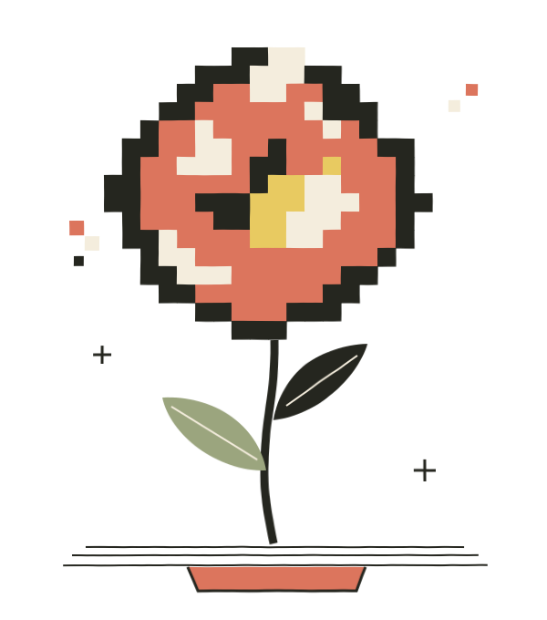

Ідея, що
може вирости.
Від університетського задуму —
до продукту, який живе самостійно.
Venture Layer — це люди й правила, які допомагають пройти цей шлях. Розберімося разом: просто, наочно й крок за кроком.
Подивитися, як це працює
Звідки береться
перша іскорка?
Ідея може прийти трьома шляхами. Оберіть один — цей навчальний приклад супроводжуватиме нас далі.
Спочатку — обрати, що варто дослідити
Venture Lead вивчає доступні можливості та їхній потенціал. Коли бере можливість до портфеля, відкриваються її журнал і перша стадія — Ideation. Це відбувається до G1.
можливості, які веде Lead
Чотири стадії.
Кожна має своє питання.
Стадія — це відрізок роботи. Наприкінці розглядають результати й обирають наступний крок. Така точка рішення називається G — gate.
Що ми хочемо
змінити?
Починаємо з можливості: формулюємо проблему й обираємо першу перевірку, яка допоможе зрозуміти наступний крок.
Університетська задача: студенти гублять зміни в розкладі. Lead з’ясовує контекст і перспективність можливості. До Validation долучається Team Lead.
Майбутні учасники визначають свою зацікавленість. До початку Validation має бути Team Lead; команда може складатися лише з нього.
З’ясовує контекст, організовує початкову роботу, допомагає сформулювати перший тест і визначає вагу ризиків.
Від початку Validation Team Lead має бути студентом або аспірантом, який навчається в межах Academic Partner.
Як це сформульовано у White Paper +
G1 Screening. Є ініціатор, сформульована проблема, погоджений перший тест і визначена вага ризиків попиту та здійсненності. Для початку Validation визначено Team Lead, який відповідає вимогам Команда та перевірки.
Попередні напрацювання зберігаються. Придатні докази враховують і на наступних стадіях.
Потрібно людям.
Можливо зробити.
Будь-яка ідея має два головні ризики. Обидва перевіряють упродовж шляху. Оберіть, що зараз викликає більше запитань.
Спочатку зрозуміти потребу
Для цифрового сервісу технічне рішення може бути зрозумілим. Головне питання — чи має конкретна група людей проблему, заради якої шукатиме та використовуватиме продукт.
Venture Lead визначає вагу ризиків на G1. Після зміни центрального припущення її переглядають.
Від припущення
до спостереження.
Доказ допомагає відповісти на конкретне питання. Важливо розуміти, що саме підтверджує зібрана інформація.
«Нам здається, студенти часто пропускають зміни в розкладі».
Ситуація 1 / 4Усі ситуації тут вигадані для навчання.
Що перед нами?
Оберіть відповідь — разом розберемо, що вона означає.
Домовитися заздалегідь
Lead визначає вимоги до доказів перед інтервалом і записує їх у журналі.
Дивитися на джерело
Для G3 потрібне підтвердження попиту за межами початкового залежного середовища.
Зберігати історію
Після recycle вимоги можна уточнити перед новим інтервалом. Попередні результати залишаються в журналі.
Власна справа.
Спільна підтримка.
За продукт відповідає команда. Venture Lead допомагає організувати шлях, перевірки та наступні кроки. Оберіть роль, щоб познайомитися ближче.
Команда створює продукт
Team Lead формує команду й відповідає за її роботу. Команда проводить продуктову й технічну роботу, бере участь у перевірках та використовує результати для власних рішень.
Як працює спільне рішення BoardСпробувати +
У пілоті Board має чотирьох членів. Для кворуму потрібні троє присутніх, серед них — представник Business Partner або його замінник. Рішення потребує більшості серед присутніх із правом голосу та позитивного голосу Business Partner.
За конфлікту інтересів інші члени залишаються в підрахунку кворуму, але утримуються від голосування в цьому питанні. За особистого конфлікту представника Business Partner голосує його замінник.
Кожен результат
підказує наступний крок.
Після перевірки можна продовжити, завершити підтримку або уточнити питання. Іноді відкриття змінює сам напрям продукту.
goРухаємося далі
Критерії виконано. Відкривається наступна стадія; go G4 завершує супровід.
recycleПеревіряємо ще раз
Залишилося відкрите питання. Для тієї самої стадії визначають новий інтервал.
passЗавершуємо підтримку
Підстав для подальшого супроводу замало. Команда зберігає право працювати самостійно.
pivotЗмінюємо напрям
Змінилося центральне припущення. Lead визначає відповідну стадію й новий інтервал.
Який наступний крок доцільний?
G1–G3 вирішує Venture Lead. На G4 рішення go ухвалює Board; pass і recycle залишаються за Lead. Для G1 передбачені go та pass.
Усе важливе —
в одному журналі.
Звідки взялася ідея, що перевірили, які докази отримали й чому обрали наступний крок. Журнал веде Venture Lead.
Якщо Lead зміниться, наступна людина зможе продовжити роботу з цієї історії. Заміна Lead зберігає чинний інтервал і критерії.
можливостіРозклад без плутанини
Що припускаємо
Що робимо й бачимо
Що вирішили
Що допомагає
рухатися вперед.
Головний операційний ресурс Layer — оплачуваний час Venture Leads. Партнери забезпечують умови для супроводу.
Підтримка програми
Business Partner фінансує бонуси Leads. Training Partner забезпечує підготовку, перевірки, експертизу, юридичний супровід і програмне середовище.
Домовленості команди
Оплату, частки й іншу економічну участь погоджують з урахуванням внеску та подальшої роботи. Сама назва ролі частку не визначає.
Самостійність продукту
Для G4 команда має ресурс до наступного рубежу, сама визначає роботу продукту й урегульовує права та зобов’язання. Достатнім може бути й один грант.
А як щодо інвестицій і створення компанії? +
Business Partner може інвестувати за взаємною згодою з командою. Фінансування бонусів Leads саме по собі не створює інвестиції у venture. Умови конкретної інвестиції визначає угода сторін.
Для go G4 потрібні юридичний висновок і врегульовані права та зобов’язання. Оформлення компанії входить до підготовки за потреби; певна юридична форма, дохід або прибутковість не є обов’язковими умовами G4.
У цьому путівнику Spin-out — назва завершальної стадії моделі. Університетське походження бізнесу та назва стадії описують різні аспекти його розвитку.
Спочатку — пілот.
Щоб навчитися на практиці.
Пілот перевіряє якість супроводу, рух команд, навантаження Leads і роботу партнерства. Усі числа нижче — стартові пропозиції White Paper.
Venture Leads,
серед них — Managing Lead
додаткових кандидатів
у Fellowship
учасників Fellowship
зі стартовими Leads
Початковий орієнтир — три позиції в портфелі одного Lead за доступності 0,5 FTE. Працездатне навантаження визначає пілот.
Кафедра систем штучного інтелекту Львівської політехніки
Tech Startup School
потенційно SKELAR
Що вважаємо результатом і що відбувається після пілоту? +
Оцінювання враховує стартову зрілість проєктів, якість рішень, нові докази, самостійність і досвід учасників. Два різні проєкти з go G3 — орієнтир ранніх результатів. Окремо показують готовність Fellows та фактичне надання мандатів.
За результатами Board може продовжити програму, змінити її конфігурацію або завершити поточний формат. До завершення визначають подальшу роботу з кожною активною позицією. Адміністративне завершення програми, pass і go G4 фіксують як різні події.
Наступний запуск покаже, чи відтворюються результати з іншою групою команд і після зміни Leads. Триваліші продуктові й економічні результати потребують подальшого спостереження.
На шляху
буває по-різному.
А якщо команда ще не сформувалася? +
Можливість може потрапити до портфеля й почати Ideation до появи повної команди. До go G1, яке відкриває Validation, потрібен Team Lead. Команда може складатися лише з нього.
Хто проводить дослідження? +
Lead вивчає середовище й порівнює можливості перед початковим відбором, організовує перевірки та обирає методи. Команда бере участь у перевірках проблеми й попиту, виконує продуктову та технічну роботу. Попередні придатні докази враховують; самостійність команди поступово зростає.
Що відбувається, коли змінюється Lead? +
Інший Venture Lead може прийняти можливість або venture до свого портфеля. Журнал зберігає результати й рішення, а чинний інтервал та погоджені критерії продовжують діяти.
Що відбувається, якщо Team Lead закінчив навчання? +
Команда обирає нового Team Lead, який навчається в межах Academic Partner. На заміну є час до кінця чинного інтервалу. Для go потрібен відповідний Team Lead; за відсутності заміни до кінця інтервалу Lead ухвалює pass.
Що допомагає помітити ризики вчасно? +
Журнали, portfolio review, зворотний зв’язок команд і перегляд мандатів допомагають бачити навантаження Leads, слабкі докази, залежність від одного замовника, затримки рішень і забезпечення. Причину кожного збою розглядають окремо.
Куди звертатися, коли порушено домовленість? +
Звернення щодо порушення домовленостей, конфлікту інтересів або перевищення повноважень розглядає Training Partner і передає висновок відповідальній стороні.
Складні слова.
Зрозумілі значення.
Можливість / opportunity+
Ідея або задача, яку Layer бере в роботу. Вона має статус можливості до рішення go на G2.
Venture+
Можливість, яка отримала go на G2. Вона вже має підтверджену проблему за критеріями стадії. Після pivot її історія та ідентичність зберігаються.
Ініціатор+
Людина, група або організація, від якої надійшла можливість.
Команда venture+
Один або кілька учасників, які виконують продуктову й технічну роботу над можливістю або venture.
Team Lead+
Людина, яка очолює команду та відповідає за її формування й роботу. Від початку Validation має навчатися в межах Academic Partner.
Venture Lead+
Учасник Fellowship із чинним мандатом на супровід портфеля. Відповідає за наступні кроки, організацію перевірок і рішення за результатами.
Стадія+
Відрізок роботи з визначеними критеріями переходу й інтервалом. Завершується точкою рішення.
Інтервал стадії+
Календарний строк супроводу на одній стадії. Lead обирає його відповідно до ризиків і потрібних перевірок. У пілоті запропоновано 2, 6 або 12 тижнів.
Точка рішення / gate+
Момент оцінювання результатів стадії. Тут за доказами визначають подальший крок. У моделі є G1, G2, G3 і G4.
Мандат+
Надані Board повноваження Venture Lead вести портфель протягом визначеного періоду. У пілоті перегляд передбачено кожні півтора місяця.
Портфель+
Можливості й ventures, які веде один Venture Lead у межах свого мандата.
Ризик+
Невизначеність щодо попиту або здійсненності, яка може зробити подальшу роботу марною. Для перевірки формулюють припущення.
Go+
Критерії виконано — відкривається наступна стадія. Go на G4 означає успішне завершення супроводу.
Pass+
Припинення підтримки Venture Layer із зафіксованими причиною й доказами. Команда може продовжувати роботу самостійно.
Recycle+
Новий інтервал на тій самій стадії для відкритого питання. Перед його початком можна уточнити вимоги до доказів; історія зберігається.
Pivot+
Зміна центрального припущення про продукт. Venture Lead визначає відповідну стадію, ризики й новий інтервал.
Spin-out / Spin out+
Завершальна стадія супроводу Layer. Її успішне завершення — go на G4 і перехід venture до самостійної роботи.
Журнал venture+
Хронологічна історія можливості й venture: перевірки, докази, команда, рішення та зобов’язання. Журнал веде Venture Lead.
Спільний реєстр+
Єдиний перелік усіх можливостей і ventures Layer, включно із завершеними. Він зберігає інституційну пам’ять програми.
Venture Fellowship / Fellow+
Fellowship — пул людей, які готуються до ролі Lead або вже працюють за мандатом. Fellow проходить підготовку й підтримує готовність прийняти портфель.
Managing Venture Lead+
Lead, обраний іншими Leads для координації спільної роботи. Зводить портфельні дані та звітує перед Board.
Academic Partner+
Університетський підрозділ-партнер, який забезпечує взаємодію зі своєю студентською спільнотою й доступ до академічного середовища.
Training Partner+
Партнер, який відбирає й готує Fellows, методично підтримує Leads та забезпечує ресурс для перевірок, експертизу, юридичний супровід і середовище.
Business Partner+
Фінансує бонуси Leads і має представника з правом вето в Board. Може інвестувати у ventures за взаємною згодою з командою.
Supervisory Board+
Наглядовий орган Layer. Вирішує питання мандатів, оцінювання, винагород, go G4, спільного бюджету й програми.
Founder discovery+
Робота Venture Lead з університетським середовищем: знайомство з людьми та допомога в переході від інтересу до першої можливості.
Portfolio review+
Спільний розгляд портфелів, нових результатів, доступності супроводу й перешкод. У пілоті відбувається щомісяця.
Доказ+
Матеріал або спостережений результат, який допомагає перевірити конкретне припущення. Достатність визначається критеріями стадії та вимогами до проєкту.
Такого слова поки немає. Спробуйте українську або англійську назву.
Наступний крок —
поставити добре питання.
Яку проблему хочеться зрозуміти? Для кого вона важлива? Яка перевірка допоможе зробити наступний крок?